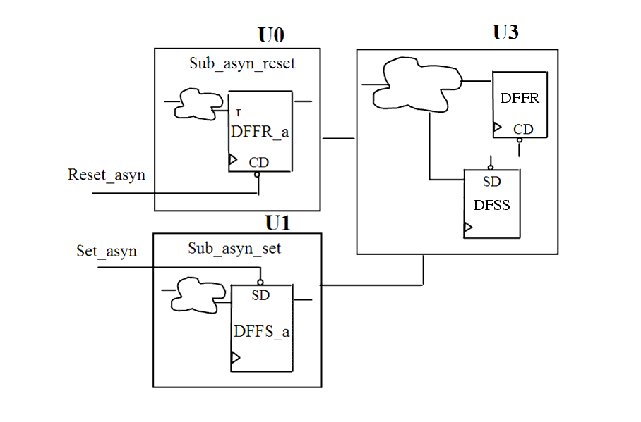

| Description | This rule fires when Leda detects flip-flops with asynchronous sets or resets and flip-flops without asynchronous sets or resets in the same module. To avoid metastability in timing analysis, separate flip-flops with asynchronous sets or resets into separate modules |
| Policy | DESIGN |
| Ruleset | PARTITIONING |
| Language | VHDL/Verilog |
| Type | Hardware |
| Severity | Error |
This is an example of valid Verilog code, followed by a circuit diagram that illustrates the correct approach:
module ntl_par12_top;
...
Sub_asyn_reset U0(.Clock(Clock), .Reset_asyn (Reset_asyn), .Din(Din1),
.Dout(Dout1));
Sub_asyn_set U1(.Clock(Clock), .Set_asyn (Set_asyn), .Din(Din2),
.Dout(Dout2));
...
endmodule
module Sub_asyn_reset (Clock, Reset_asyn, Din, Dout);
...
//asynchronous DFF with reset
always @(posedge Clock or negedge Reset_asyn)
begin
if (!Reset_asyn)
Dout <= 0;
else Dout <= Din;
end
endmodule
module Sub_asyn_set (Clock, Set_asyn, Din, Dout);
...
//asynchronous DFF with set
always @(posedge Clock or negedge Set_asyn)
begin
if (!Set_asyn)
Dout <= 1;
else Dout <= Din;
end
endmodule
